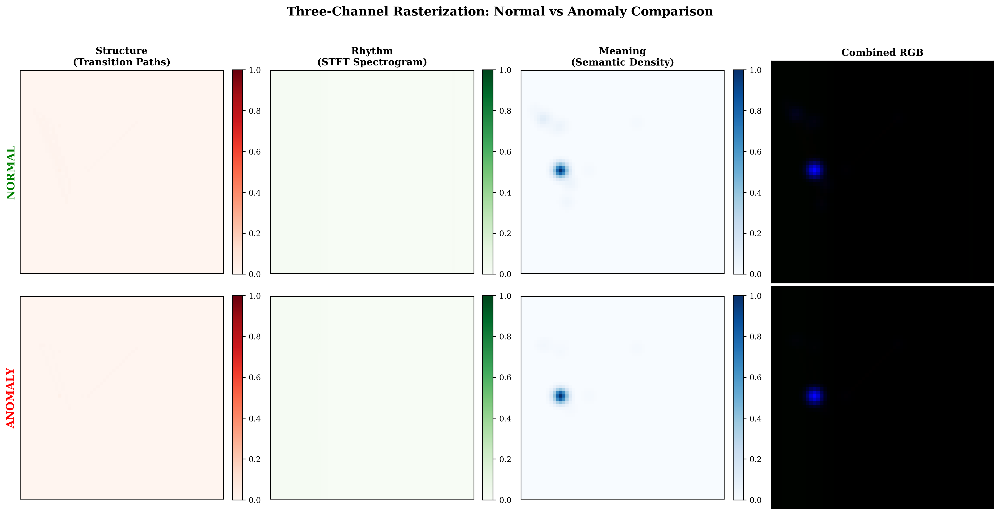
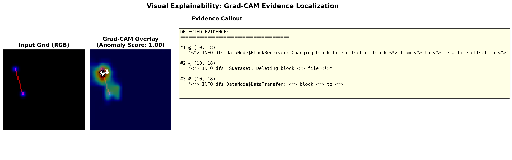

Explainable log anomaly detection through spatial representations.
My contribution: designed the fixed 64 × 64 log representation, built the lightweight CNN, used Grad-CAM reverse mapping, and evaluated the framework on HDFS and BGL with chronological splits.
The question
Can a compact model detect unusual system behavior and point an analyst back to the log evidence behind its prediction?
The approach
Parse logs into templates, place them in a fixed 2D semantic atlas, and represent each window through structure, rhythm, and meaning. A lightweight CNN scores the grid; Grad-CAM activations map back to source templates.
The investigation
The repository includes chronological evaluation, channel and fusion ablations, stability analysis, and an audit of explanation localization.

View the source figure ↗
- 01 Parse logs
- 02 Build the atlas
- 03 Score the grid
- 04 Trace the evidence
Reported repository results for the final model without a gate. Latency measured on an Apple M4 CPU, batch size 1. Evaluation details ↗
Explore the evaluation & visual evidence
| Metric | Reported value |
|---|---|
| AUPRC | 0.7734 |
| F1 / precision / recall | 0.8018 / 0.8939 / 0.7269 |
| Explanation precision@3 | 0.720 |
